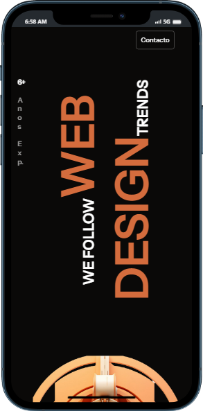

Olá!
Olá, bem vindo ao meu website. Eu chamo-me Luis Guilherme e trabalho com Web Design, Design Gráfico e UI Design... Espero podermos trabalhar juntos e criar um website que transmita claramente os valores da sua empresa.
+ MAIS
Sendo mais específico, eu contruo diversos modelos de websites, usando uma variedade de recursos para alcançar o resultado desejado. O objectivo final é criar um website que siga a visão do cliente sem trair os principios de um design que cause uma boa impressão ao visitante.
Serviços

Os websites que construo são sempre responsivos de modo a criar uma boa experiência de usuário, não importa o despositivo usado para acessá-lo, o mesmo sempre se apresenta com um design excelente em computadores e telemóveis.